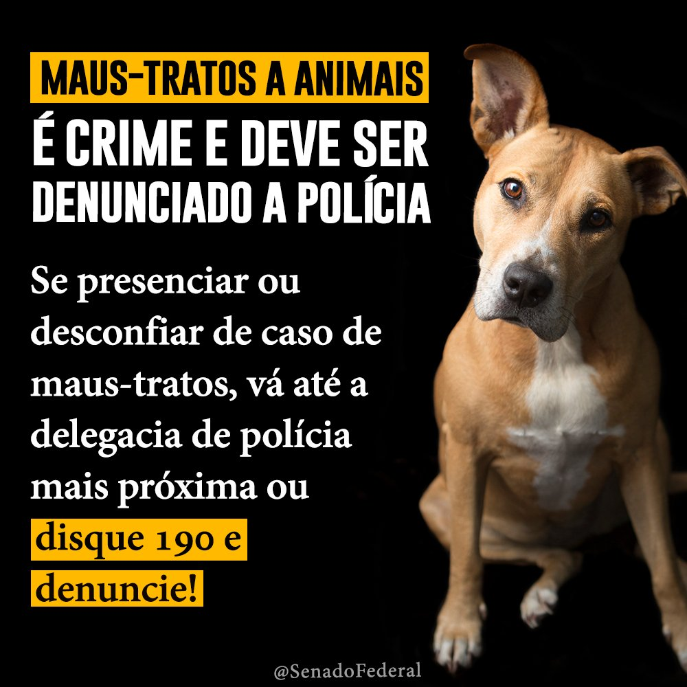

Falando sobre leis |
|
|
Página Inicial Campanhas ONGs Leis Sobre |
lei que protege os animaisA Lei nº 9.605/1998, conhecida como Lei de Crimes Ambientais, é a principal legislação que trata  |
| Julio Vieira - Lucas Zelioli - 1C3 - Site Educacional | |